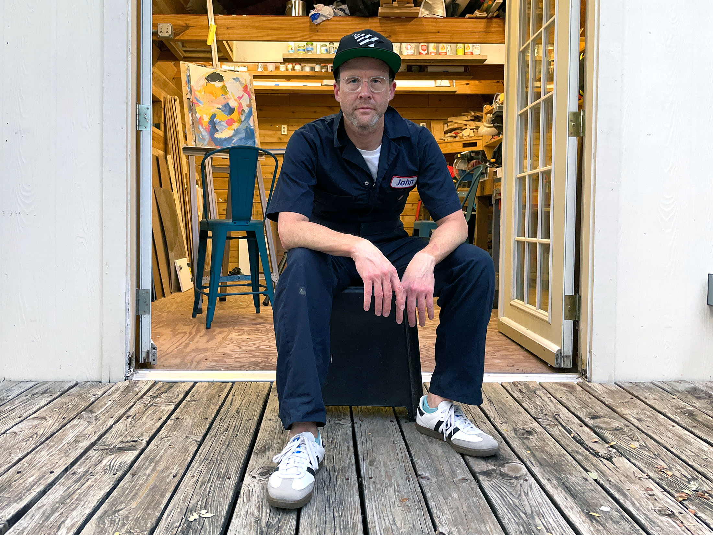

John Powell’s improvisational technique is a continuous stream of addition and reduction. The unpredictable results are dense layers of explosive color, rich texture, and probing lines. He avoids representation and narrative in the work, instead focusing on building surfaces meant to be appreciated purely for sensual reasons. This is represented even in the titles which are built much like the Dada poetry of Tristan Tzara. John’s approach invites the viewer to appreciate that these “strange windows” contain nothing and everything.

He holds an MFA from Louisiana Tech University and has been influenced by artists such as Cy Twombly, Joan Mitchell, David Carson, and Willem De Kooning throughout his career as both an artist and digital designer.